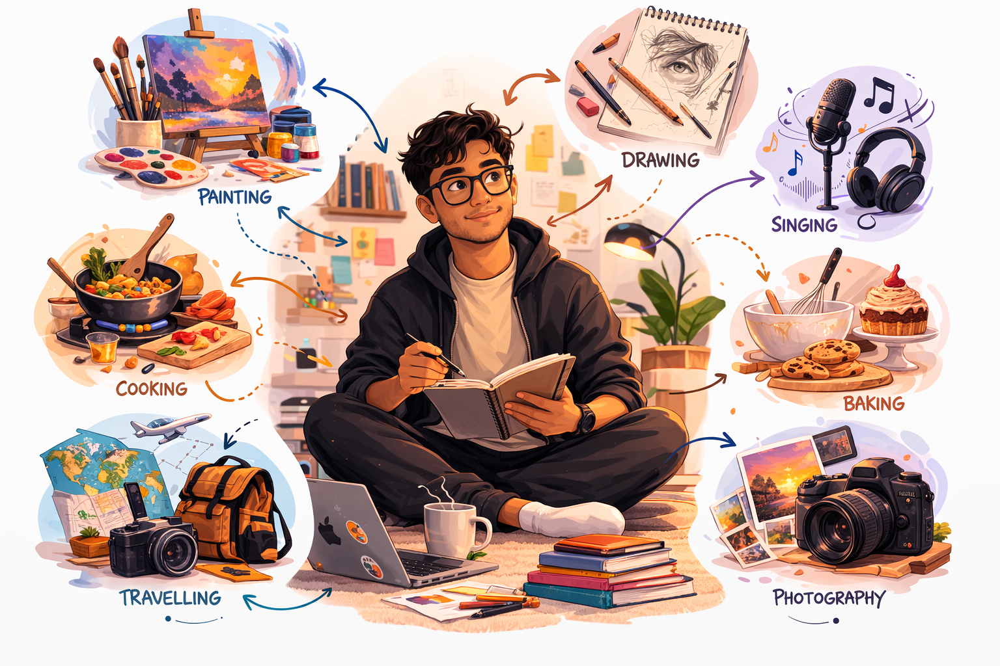

I am a Master’s graduate with a passion for data and a strong foundation in data analysis, statistics, and data visualisation. I enjoy analysing datasets, identifying patterns, and transforming data into meaningful insights that support informed decision-making.
I am currently expanding my knowledge through personal projects, Udacity courses, and hands-on practice with SQL, Excel, Python, Power BI and Tableau. I continuously work on improving my analytical and technical skills by solving real-world data problems.
I am actively seeking an entry-level role or internship in Data Analytics where I can contribute to data-driven decision making, uncover insights, and support business strategies.
My goal is to apply my analytical skills in real-world environments, grow as a professional, and build a strong foundation for a long-term career in data analytics.
I love exploring creative hobbies and new experiences. I enjoy photography, capturing moments that tell a story, and singing, which lets me express myself and have fun. Cooking and baking are my way of experimenting with flavours and sharing treats with friends and family. I also love drawing and painting, bringing my ideas to life on paper or canvas, and travelling, especially when I immerse myself in new cultures - it always fuels me and sparks new ideas. These hobbies keep me curious, creative, and always ready to try something new.

If you are looking for a motivated, detail-oriented, and quick-learning individual with a passion for problem-solving and continuous learning, I would be excited to connect and explore opportunities. Feel free to visit the Contact tab to reach out.